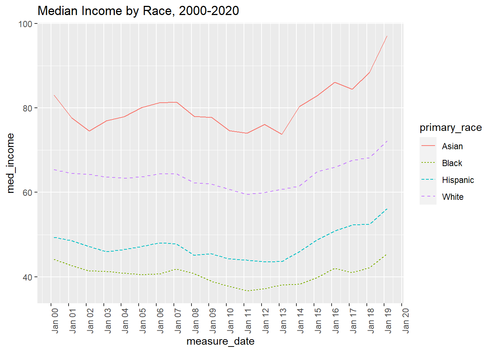
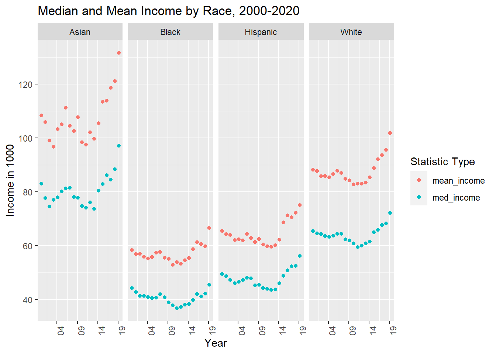

The data set I’ll be utilizing for this exercise measures the distribution of household income by race and Hispanic status in the United States between 1967 and 2019 by race and Hispanic origin.
When importing this excel file, I will first filter observations to those that do not represent header or footer records in the source file. I will also retain only variables I intend to use to describe the data set and create visualizations.
Data description
In this data set, a case is defined by race &Hispanic status, method of data collection, type of status combputed, and year of data collection.
# Import data, skip titles, retain select columns only usa_hh_raw <-read_excel( "_data/USA Households by Total Money Income, Race, and Hispanic Origin of Householder 1967 to 2019.xlsx" , skip =5 , col_names =c("hhorigin_year", "hh_n_k", "del", "pctdis_lt_15k", "pctdis_15_lt_25k", "pctdis_25_lt_35k", "pctdis_35_lt_50k", "pctdis_50_lt_75k", "pctdis_75_lt_100k","pctdis_100_lt_150k", "pctdis_150_lt_200k", "pctdis_ge_200k", "med_income", "me_med_income", "mean_income", "me_mean_income"))%>%select(!contains("del")) # remove footers obs usa_hh_tidier <-head(usa_hh_raw, -31)
Data cleaning and tidying steps
To best evaluate this data, the column representing “Race and Hispanic origin of householder and year” in the source file will need to be parsed into four new variables to separately capture: - Race and Hispanic Status - Year of data collection - Method of data collection
# mutate to better manipulate into case structure # define origin based on header row for date series of stats usa_hh_tidier <- usa_hh_tidier %>%mutate(temp_hhorigin =case_when(is.na(mean_income)~ hhorigin_year, TRUE~NA_character_),hhorigin =str_replace(temp_hhorigin, "\\d+", ""))%>%fill(hhorigin, .direction ="down")# select measure year and footnote values from column where both pieces information combined usa_hh_tidier <- usa_hh_tidier %>%mutate(temp_year=case_when(!is.na(hh_n_k)~ hhorigin_year, TRUE~NA_character_), year =substr(temp_year, 1, 4),year_footnote =substr(temp_year, 5, nchar(temp_year)))# remove header rows for date series of stats usa_hh_tidy <- usa_hh_tidier %>%filter(!is.na(mean_income))#remove old columns usa_hh_tidy <- usa_hh_tidy %>%select(!contains("hhorigin_year") &!contains("temp"))#convert character metrics to numeric usa_hh_tidy <- usa_hh_tidy %>%mutate_at(c(1:14), as.numeric) %>%mutate('measure_date'=make_date(year = year, month =3, day =1)) %>%select(!contains("year")) %>%filter(!is.na(mean_income))#further mutate hhorigin to more cleanly represent race & combinations there usa_hh_tidy <- usa_hh_tidy %>%mutate(hhorigin =str_remove(hhorigin, 'NOT HISPANIC')) table(usa_hh_tidy$hhorigin)
ALL RACES ASIAN ALONE
55 20
ASIAN ALONE OR IN COMBINATION ASIAN AND PACIFIC ISLANDER
20 14
BLACK BLACK ALONE
35 20
BLACK ALONE OR IN COMBINATION HISPANIC (ANY RACE)
20 50
WHITE WHITE ALONE
35 20
WHITE ALONE, WHITE,
20 30
Generated by summarytools 1.0.1 (R version 4.2.2) 2023-04-25
Visualization with Multiple Dimensions
For this step, I will:
evaluate changes in median household income by race/ethncitiy category between 2000 and 2019 via line graph. I will more carefully specify options for axes and display by different race
Evaluate the differences between mean and median income by race group over time utilizing scatterplots. To avoid overcrowding in the graph, I will employ faceting to display differences by race. I will carefully specify axes and labels to improve the effect of this graphic.
# Select minimum median and mean income, remove records for all origins combined usa_hh_tidy_income<- usa_hh_tidy %>%group_by(primary_race, measure_date)%>%summarise(med_income =min(med_income),mean_income =min(mean_income) ) %>%filter(measure_date >'1999-12-31'& primary_race!="DELETE") usa_hh_tidy_income %>%ggplot( aes(x=measure_date, y=med_income, group=primary_race, color = primary_race))+geom_line(aes(linetype=primary_race))+ggtitle("Median Income by Race, 2000-2020")+scale_x_date(date_breaks ="1 year", date_labels ="%b %y")+theme(axis.text.x =element_text(angle =90))

scatter_prep <- usa_hh_tidy_income %>%pivot_longer(cols =c("med_income", "mean_income"), names_to ="measure_type" )scatter_prep %>%ggplot( aes(measure_date, value, colour = measure_type))+geom_point()+facet_grid(~primary_race)+scale_x_date(date_breaks ="5 year", date_labels ="%y")+theme(axis.text.x =element_text(angle =90))+ggtitle("Median and Mean Income by Race, 2000-2020")+labs( colour ="Statistic Type",x ="Year" , y ="Income in 1000")

Source Code
---title: "Challenge 7"author: "Lauren Zichittella"description: "Visualizing Multiple Dimensions"date: "04/25/2023"format: html: toc: true code-copy: true code-tools: truecategories: - laurenzichittella - challenge_7 - usa_households---```{r}#| label: setup#| warning: false#| message: falselibrary(tidyverse)library(ggplot2)library(readxl)library(stringr)knitr::opts_chunk$set(echo =TRUE, warning=FALSE, message=FALSE)```## Chunk 1: Read in data The data set I'll be utilizing for this exercise measures the distribution of household income by race and Hispanic status in the United States between 1967 and 2019 by race and Hispanic origin.When importing this excel file, I will first filter observations to those that do not represent header or footer records in the source file. I will also retain only variables I intend to use to describe the data set and create visualizations. ### Data descriptionIn this data set, a case is defined by race &Hispanic status, method of data collection, type of status combputed, and year of data collection. ```{r}# Import data, skip titles, retain select columns only usa_hh_raw <-read_excel( "_data/USA Households by Total Money Income, Race, and Hispanic Origin of Householder 1967 to 2019.xlsx" , skip =5 , col_names =c("hhorigin_year", "hh_n_k", "del", "pctdis_lt_15k", "pctdis_15_lt_25k", "pctdis_25_lt_35k", "pctdis_35_lt_50k", "pctdis_50_lt_75k", "pctdis_75_lt_100k","pctdis_100_lt_150k", "pctdis_150_lt_200k", "pctdis_ge_200k", "med_income", "me_med_income", "mean_income", "me_mean_income"))%>%select(!contains("del")) # remove footers obs usa_hh_tidier <-head(usa_hh_raw, -31)```## Data cleaning and tidying steps To best evaluate this data, the column representing "Race and Hispanic origin of householder and year" in the source file will need to be parsed into four new variables to separately capture:- Race and Hispanic Status - Year of data collection- Method of data collection```{r}# mutate to better manipulate into case structure # define origin based on header row for date series of stats usa_hh_tidier <- usa_hh_tidier %>%mutate(temp_hhorigin =case_when(is.na(mean_income)~ hhorigin_year, TRUE~NA_character_),hhorigin =str_replace(temp_hhorigin, "\\d+", ""))%>%fill(hhorigin, .direction ="down")# select measure year and footnote values from column where both pieces information combined usa_hh_tidier <- usa_hh_tidier %>%mutate(temp_year=case_when(!is.na(hh_n_k)~ hhorigin_year, TRUE~NA_character_), year =substr(temp_year, 1, 4),year_footnote =substr(temp_year, 5, nchar(temp_year)))# remove header rows for date series of stats usa_hh_tidy <- usa_hh_tidier %>%filter(!is.na(mean_income))#remove old columns usa_hh_tidy <- usa_hh_tidy %>%select(!contains("hhorigin_year") &!contains("temp"))#convert character metrics to numeric usa_hh_tidy <- usa_hh_tidy %>%mutate_at(c(1:14), as.numeric) %>%mutate('measure_date'=make_date(year = year, month =3, day =1)) %>%select(!contains("year")) %>%filter(!is.na(mean_income))#further mutate hhorigin to more cleanly represent race & combinations there usa_hh_tidy <- usa_hh_tidy %>%mutate(hhorigin =str_remove(hhorigin, 'NOT HISPANIC')) table(usa_hh_tidy$hhorigin) usa_hh_tidy <- usa_hh_tidy %>%mutate(med_income = med_income/1000, mean_income = mean_income/1000, primary_race=case_when ( str_detect(hhorigin, 'ASIAN') ~"Asian" , str_detect(hhorigin, 'BLACK') ~"Black" , str_detect(hhorigin, 'HISPANIC') ~"Hispanic" , str_detect(hhorigin, 'WHITE') ~"White" ,TRUE~"DELETE" ),single_race=case_when (str_detect(hhorigin, 'ALONE') ~1 ,TRUE~0))# Sanity checkprint(summarytools::dfSummary(usa_hh_tidy,varnumbers =FALSE,plain.ascii =FALSE, style ="grid", graph.magnif =0.70, valid.col =FALSE),method ='render',table.classes ='table-condensed')```## Visualization with Multiple DimensionsFor this step, I will:1) evaluate changes in median household income by race/ethncitiy category between 2000 and 2019 via line graph. I will more carefully specify options for axes and display by different race2) Evaluate the differences between mean and median income by race group over time utilizing scatterplots. To avoid overcrowding in the graph, I will employ faceting to display differences by race. I will carefully specify axes and labels to improve the effect of this graphic.```{r}# Select minimum median and mean income, remove records for all origins combined usa_hh_tidy_income<- usa_hh_tidy %>%group_by(primary_race, measure_date)%>%summarise(med_income =min(med_income),mean_income =min(mean_income) ) %>%filter(measure_date >'1999-12-31'& primary_race!="DELETE") usa_hh_tidy_income %>%ggplot( aes(x=measure_date, y=med_income, group=primary_race, color = primary_race))+geom_line(aes(linetype=primary_race))+ggtitle("Median Income by Race, 2000-2020")+scale_x_date(date_breaks ="1 year", date_labels ="%b %y")+theme(axis.text.x =element_text(angle =90))scatter_prep <- usa_hh_tidy_income %>%pivot_longer(cols =c("med_income", "mean_income"), names_to ="measure_type" )scatter_prep %>%ggplot( aes(measure_date, value, colour = measure_type))+geom_point()+facet_grid(~primary_race)+scale_x_date(date_breaks ="5 year", date_labels ="%y")+theme(axis.text.x =element_text(angle =90))+ggtitle("Median and Mean Income by Race, 2000-2020")+labs( colour ="Statistic Type",x ="Year" , y ="Income in 1000")```